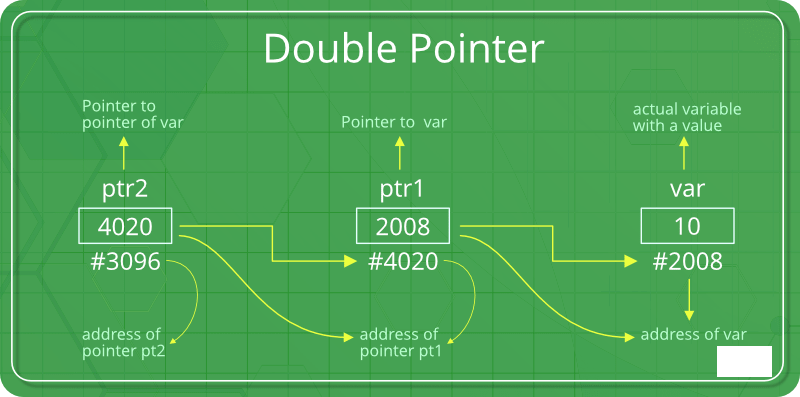

Pointers to pointers
We already know that a pointer points to a location in memory and thus used to store address of variables. So, when we define a pointer to pointer. The first pointer is used to store the address of second pointer. That is why they are also known as double pointers.
How to declare a pointer to pointer in C?
Declaring Pointer to Pointer is similar to declaring pointer in C. The difference is we have to place an additional ‘*’ before the name of pointer. Syntax:
int **ptr2; // declaring double pointers
Below diagram explains the concept of Double Pointers:
The above diagram shows the memory representation of a pointer to pointer. The first pointer ptr1 stores the address of the second pointer ptr2 and the second pointer ptr2 stores the address of the variable.
int main()
{
int var = 789;
// pointer for var
int *ptr2;
// double pointer for ptr2
int **ptr1;
// storing address of var in ptr2
ptr2 = &var;
// Storing address of ptr2 in ptr1
ptr1 = &ptr2;
// Displaying value of var using
// both single and double pointers
printf("Value of var = %d\n", var );
printf("Value of var using single pointer = %d\n", *ptr2 );
printf("Value of var using double pointer = %d\n", **ptr1);
return 0;
}
Output:
Value of var = 789 Value of var using single pointer = 789 Value of var using double pointer = 789